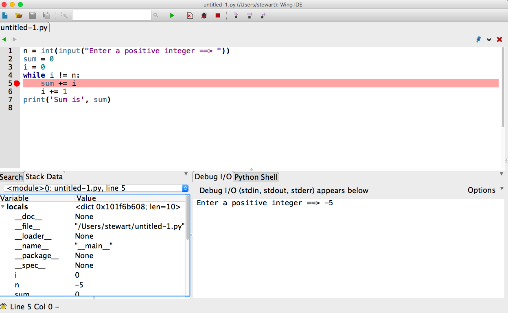

Lecture 11 — Decisions Part 2¶
Overview — Logic and Decision Making, Part 2¶
- Program structure
- Debugging and “hardening” a simple function
- A bit of design and a bit of a random walk
- More on logic - the key to getting programs right
- Boolean logic
- Nested if statements
- Assigning boolean variables
Part 1: Program Structure¶
Programming requires four basic skills:
Develop a solution.
- Start with small steps, solve them, and then add complexity.
Structure your code.
Move repeated code into functions.
Make your code easy to read and modify. Use meaningful variable names and break complex operations into smaller parts.
Place values in variables so they are easy to change.
Include comments for important functions, but do not clutter your code with unnecessary comments. A classic example of a completely unnecessary comment is:
x += 1 # increment x
Document assumptions about what is passed to a function.
If your function is meant to return a value, make sure it always does.
Test your code.
- Find all possible cases that your program should handle, including typos in the input. As programs get larger, this is increasingly hard.
- If you cannot check for all inputs, then you must check your code for meaningful inputs: regular (expected inputs) and edge cases (inputs that can break your code).
Debug your code.
- Never assume an untested part of your code is bug free. “If it ain’t tested, it’s broken.”
- Learn syntax well so that you can spot and fix syntax errors fast.
- Semantic errors are much harder to find and fix. You need strategies to isolate where the error is.
- Print output before and after crucial steps.
- Look at where your program crashed.
- Fix the first error first, not the biggest error. The first error may be the cause of bigger errors later in your code.
- Use a debugger.
- Simplify the problem: remove (by commenting out) parts of your code until you no longer have an error. Look at the last code removed for a source of at least part of your errors.
- Test parts of your code separately and once you are convinced they are bug free, concentrate on other parts.
Help with Debugging¶
Consider the following code to add the first
nintegers:n = int(input("Enter a positive integer ==> ")) total = 0 i = 0 while i != n: total += i i += 1 print('Sum is', total)
Does it work? For all inputs? Might it run forever? (We’ll ignore the fact that a
forloop would be better here.)How might we find such an error?
- Careful reading of the code.
- Insert
print()statements. - Use the Wing IDE 101 debugger.
We will practice with the Wing IDE 101 debugger in class, using it to understand the behavior of the program. We will explain the following picture:
and note the use of:
- The hand, bug, and stop symbols at the top of the screen, and
- The Debug I/O and Stack Data at the bottom of the screen.
Debugging becomes crucial in tracking logic errors, as well.
Program Organization¶
Envision your code as having two main parts: the main body and the functions that help the main code.
Make sure your functions accomplish one well-defined task. This makes them both easy to test and useful in many places.
As we will see in an example below, in Python it is good practice to separate the functions and the main body with the following addition to the program structure:
if __name__ == "__main__": # Put the main body of the program below this line
This will have no apparent effect when a program is run. However, if a program is imported as a module into another program (like the utility code we have been giving you), any code within the above
ifblock is skipped!This allows programs to work both as modules and stand alone code.
When the primary purpose of your code is to provide functionality as a module, it is best to use the code in the main body to test the module functions.
Part 2: Extended Example of a Random Walk¶
Many numerical simulations, including many video games, involve random events.
Python includes a module to generate numbers at random. For example:
import random # Print three numbers randomly generated between 0 and 1. print(random.random()) print(random.random()) print(random.random()) # Print a random integer in the range 0..5 print(random.randint(0, 5)) print(random.randint(0, 5)) print(random.randint(0, 5))
We’d like to use this to simulate a “random walk”:
- Hypothetically, a person takes a step forward or backward, completely at random (equally likely to go either way). This can be repeated over and over again until some stopping point is reached.
- Suppose the person is on a platform with \(N\) steps and the person
starts in the middle, this random forward/backward stepping
process is repeated until they fall off (reach step 0 or step
\(N+1\)).
- “forward” is represented by an increasing step, while “backward” is represented by a decreasing step
- How many steps does it take to fall off?
Many variations on this problem appear in physical simulations.
We can simulate a step in several ways:
- If
random.random()returns a value less than 0.5, step backward; otherwise step forward. - If
random.randint(0, 1)returns 1 then step forward; otherwise, step backward. - Eliminate the
ifentirely and just increment by whateverrandom.choice([-1, 1])returns (it will return either -1 (step backward) or 1 (step forward)).
- If
So, in summary, we want to start a random walk at position \(N/2\) and repeatedly take a step forward or backward based on the output of the random number generator until the walker falls off.
We will solve this problem together during lecture. We we start by enumerating some of the needed steps and then solving them individually before putting together the whole program.
- Once we see the result we can think of several ways to change things and explore new questions and ideas. Remember, a program is never done!
Part 3: Review of Boolean Logic¶
- Invented / discovered by George Boole in the 1840’s to reduce
classical logic to an algebra.
- This was a crucial mathematical step on the road to computation and computers.
- Values (in Python) are
TrueandFalse. - Operators:
- Comparisons:
<, >, <=, >=, == !=. - Logic:
and,or,not.
- Comparisons:
Truth Tables¶
Aside to recall the syntax:
and, or, notare lower case!If we have two boolean expressions, which we will refer to as
ex1andex2, and if we combine their “truth” values usingandwe have the following “truth table” to describe the result:ex1ex2ex1 and ex2FalseFalseFalseFalseTrueFalseTrueFalseFalseTrueTrueTrueIf we combine the two expressions using
or, we have:ex1ex2ex1 or ex2FalseFalseFalseFalseTrueTrueTrueFalseTrueTrueTrueTrueFinally, using
notwe have:ex1not ex1FalseTrueTrueFalse
DeMorgan’s Laws Relating and, or, and not¶
Using
ex1andex2once again to represent boolean expressions, we have:not (ex1 and ex2) == (not ex1) or (not ex2)
And:
not (ex1 or ex2) == (not ex1) and (not ex2)
Also, distribution laws:
ex1 and (ex2 or ex3) == (ex1 and ex2) or (ex1 and ex3) ex1 or (ex2 and ex3) == (ex1 or ex2) and (ex1 or ex3)
We can prove these using truth tables.
Why Do We Care?¶
- When we’ve written logical expressions into our programs, it no longer matters what we intended; it matters what the logic actually does.
- For complicated boolean expressions, we may need to almost prove that they are correct.
Part 4: Additional Techniques in Logic and Decision Making¶
We will examine:
- Short-circuiting
- Nested conditionals
- Storing the result of boolean expressions in variables
and then apply them to several problems.
Short-Circuited Boolean Expressions¶
Python only evaluates expressions as far as needed to make a decision.
Therefore, in a boolean expression of the form:
ex1 and ex2
ex2will not be evaluated ifex1evaluates toFalse. Think about why.Also, in a boolean expression of the form:
ex1 or ex2
ex2will not be evaluated ifex1evaluates toTrue.This “short-circuiting” is common across many programming languages.
Nested if Statements¶
We can place
ifstatements inside of otherifstatements.To illustrate, consider the following where
ex1,ex2,ex3, andex4are all boolean expressions, andblockA,blockB,blockD, andblockEare sections of code.if ex1: if ex2: blockA elif ex3: blockB elif ex4: blockD else: blockE
We will examine this example in class and answer the following questions:
- Under what conditions is each block executed?
- Is it possible that no blocks are executed?
- What is the equivalent non-nested if-elif-else structure?
Storing the Result of a Boolean Expression¶
Sometimes we store the result of boolean expressions in a variable for later use:
f = float(input("Enter a Fahrenheit temperature: ")) is_below_freezing = f < 32.0 if is_below_freezing: print("Brrr. It is cold")
We use this to:
- Make code clearer.
- Avoid repeated evaluation of the same expression, especially if the expression requires a lot of computation.
Examples for the Lecture¶
We will work on the following examples during class, as time permits.
In the following code, for what values of
xandydoes the code print 1, for what values does the code print 2, and for what values does the code print nothing at all?if x > 5 and y < 10: if x < 5 or y > 2: if y > 3 or z < 3: print(1) else: print(2)
The moral of the story is that you should be careful to ensure that your logic and if structures cover the entire range of possibilities!
Doctors sometimes assess a patient’s risk of heart disease in terms of a combination of the BMI (body mask index) and age using the following table:
Age \(\leq 45\) Age \(> 45\) BMI \(< 22.0\) Low Medium BMI \(\geq 22.0\) Medium High Assuming the values for a patient are stored in variables
ageandbmi, we can write the following code:slim = bmi < 22.0 young = age <= 45
We will work out two different ways of printing Low, Medium or High according to the table based on the values of the boolean variables
slimandyoung.Challenge example: Suppose two rectangles are determined by their corner points -
(x0, y0)and(x1, y1)for one rectangle and(u0, v0)and(u1, v1)for the other. Write a function that takes these four tuples as arguments and returnsTruewhen the two rectangles intersect andFalseotherwise.
Summary of Discussion of if Statements and Logic¶
- Logic is a crucial component of every program.
- Basic rules of logic, including DeMorgan’s laws, help us to write and understand boolean expressions.
- It sometimes requires careful, precise thinking, even at the level of
a proof, to ensure logical expressions and if statement structures
are correct.
- Many bugs in supposedly-working programs are caused by conditions that the programmers did not fully consider.
- If statements can be structured in many ways, sometimes nested several
levels deep.
- Nesting deeply can lead to confusing code, however.
- Warning specifically for Python: you can easily change the meaning of your program by accidentally changing indentation. It is very hard to debug these changes.
- Using variables to store boolean values can make code easier to understand and avoids repeated tests.
- Make sure your logic and resulting expressions cover the universe of possibilities!